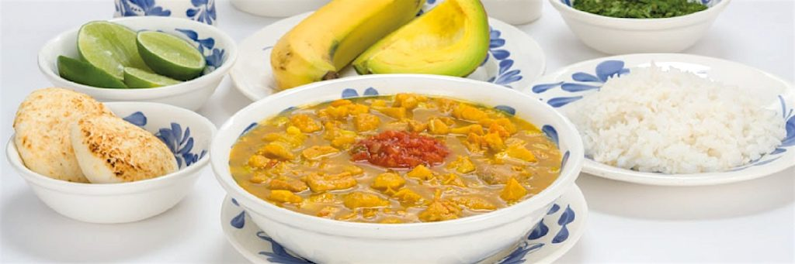

Cuchara Colombiana
La sazón es nuestra razón
Favoritos

Historial
Mondongo
23 de Octubre 2000
La sopa de mondongo es una mezcla culinaria entre Europa y América, considerado un plato representativo de Latinoamérica. Su ingrediente principal son los callos provenientes de los estómagos de la res.
No hay una certeza acerca del origen del mondongo. Podría ser África, puede que sea de los árabes o de los españoles. Lo que sí es cierto es que en Europa, dos países tienen platos muy representativos. En España el más popular es el llamado “Olla podrida”, con guiso, legumbre y hueso de cerdo y el famoso “Callos a la madrileña”, con chorizo. En Italia se llama “Tripa”, el mondongo se corta en julianitas y se ponen a asar en la plancha con cebolla y ajos. Cada región trabaja este plato con mucha variedad de acuerdo con la variedad de los ingredientes de cada región. Lo que sí es cierto es que los españoles lo trajeron a América, desde México hasta la Argentina.
excelente blog, la información es muy precisa.
la comida colombiana es muy exotica, tienen demasiados componenter. excelente , probaria todo.
he viajado por todo el mundo y esta comida esta lejos de ser de las mejores, pero tampoco de las peores.
Marranitas
19 de febrero 2000
El Aborrajado es un plato típico vallecaucano, en el que se usa plátano muy maduro —con cáscara negra—. Para prepararlo, se sacan tajadas delgadas del plátano, se fríen y se rellenan con queso campesino. Luego, se cubre con una mezcla a base de harina, leche y huevos; por último se agrega azúcar y sal.
La mayoría de los países tienen culturas híbridas —pues tienen influencia de otras costumbres— y por esto en la gastronomía pasa igual. Colombia está formada por la influencia de otras culturas que llegaron en la época de la conquista y después durante el siglo XIX y siglo XX. La cultura con más influencia para la cocina de Colombia, y especialmente la vallecaucana, fue la cultura Indígena, y la española, que llegó en los viajes del descubrimiento; también la africana, que trajeron los iberos como esclavos para trabajar en las minas y los cañaverales quienes llegaron en el siglo XVII y el siglo XVIII. Para el siglo XIX llegaron los franceses y los ingleses, quienes enseñaron su gastronomía empleada a toda clase de platillos e ingredientes.
excelente blog, la información es muy precisa.
la comida colombiana es muy exotica, tienen demasiados componenter. excelente , probaria todo.
he viajado por todo el mundo y esta comida esta lejos de ser de las mejores, pero tampoco de las peores.